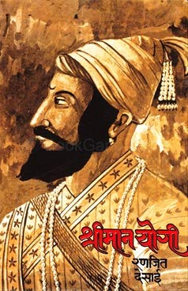

Shreeman Yogi is a historical novel based on the life of Chhatrapati Shivaji Maharaj. It beautifully describes his childhood, leadership, courage, battles, and the establishment of Hindavi Swarajya. The book inspires readers with lessons on bravery, justice, determination, and patriotism.
My favorite character is Chhatrapati Shivaji Maharaj because of his courage, wisdom, leadership, and respect for people. He always stood for justice and inspired thousands to fight for freedom.